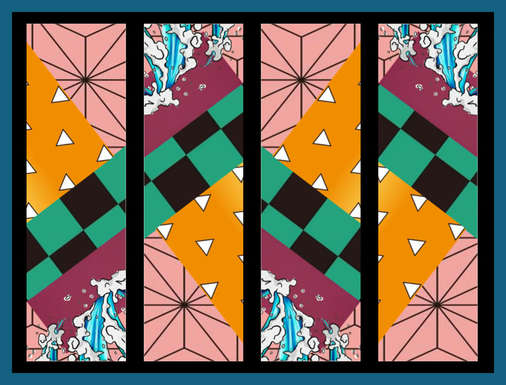

問卷蒐集
2021 年自發問卷，收約 152 筆。問性別、年齡、日漫觀看、鬼滅知曉與觀感、周邊購買等。

這是大一人工智慧概論的小組期末報告。我們用問卷蒐集日漫與《鬼滅之刃》周邊消費資料，再以 Weka 做 Apriori 關聯規則與 K-means 分群，找出較有購買意願的客群，以及不同群體偏好的周邊種類。
原始問卷約 152 筆；關聯分析與分群前會再做欄位轉換與篩選。這頁整理研究流程、重點發現與小組分工，完整書面報告可下載 PDF。
2021 年自發問卷，收約 152 筆。問性別、年齡、日漫觀看、鬼滅知曉與觀感、周邊購買等。
轉成 Weka 可讀的名義變數，拆商品類型欄位，刪除空白與過度重複規則後的資料。
Apriori 找出高可信度規則，用來判斷哪些條件較常對應「會買／不買周邊」。
SimpleKMeans 分成 5 群，對照各群在飾品、藝術品、文具等商品上的偏好差異。
整理後較有購買訊號的是：買過約 1～5 個動漫周邊的女高中生，以及每年固定看很多部日漫且喜歡鬼滅的女性。對鬼滅無感、幾乎不看日漫的人，推銷鬼滅周邊成功率較低。
有購買意願的群體多為 15～18 歲女性，平均花費多在 499 元內。分群 1 偏小飾品，分群 3 偏藝術品（公仔、娃娃等），分群 4 偏文具與小飾品；也有喜歡鬼滅但不打算再買的群體。
關聯分析、Q&A 出題
製作 Word、PPT
群聚分析、Q&A 出題
限制也寫在報告裡：樣本偏女性、資料量不大，男女差異不好比較；關聯規則曾出現大量重複，需要反覆前處理才比較能解讀。技術工具是問卷、Excel、Weka（Apriori、SimpleKMeans）。